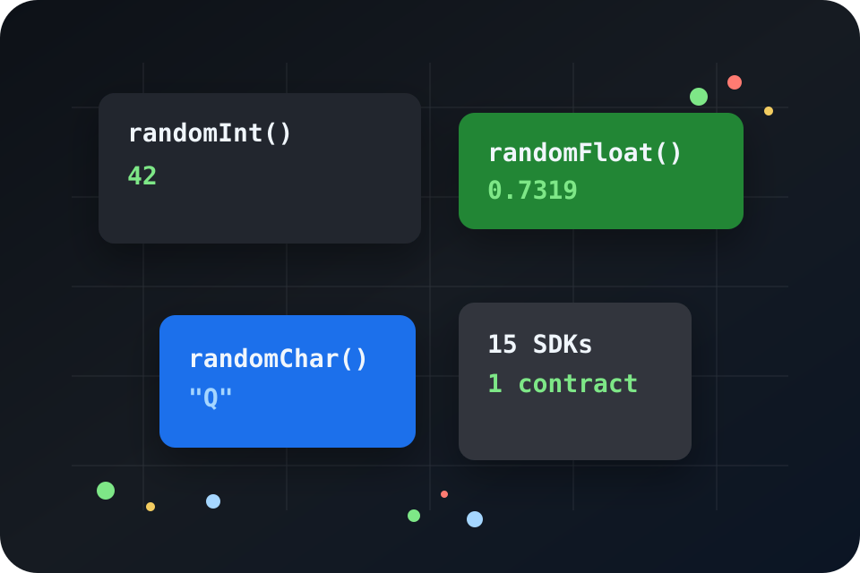

Simple surface
Call `randomInt()`, `randomFloat()`, or `randomChar()` and move on.
Alpha v1 SDK family
libRandomizer gives developers native, OS-backed random integers, floats, and characters across 15 popular languages.

From idea to value:
int thisINT = randomInt();
Why developers use it
The SDKs follow a shared v1 contract, but each package uses the language's own secure random facilities. Your users get an API that feels local, without a service call or CLI bridge in the happy path.
Call `randomInt()`, `randomFloat()`, or `randomChar()` and move on.
Implementations use platform cryptographic random sources.
Defaults, bounds, printable characters, and errors are defined once.
Future versions can add strings, colors, names, places, and more.
Language coverage
Copy-paste shape
from librandomizer import random_int
value = random_int()What alpha v1 includes
Where it goes next
Integers, floats, and characters across native SDK packages.
Strings, symbols, colors, words, names, and places.
Lists, weighted choices, dates, and reusable random object profiles.